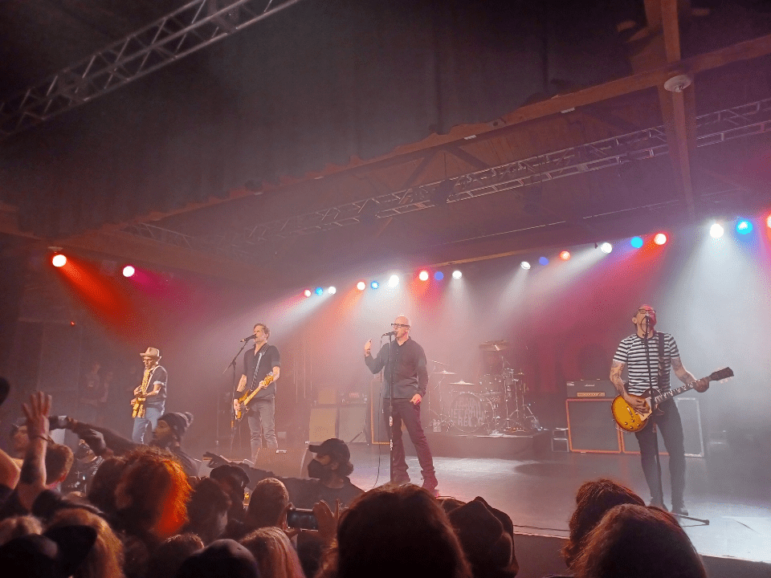

Well, well, well, looks like everything turned out for the best. To be honest I was pretty concerned with the trip. We're all broke after all and on top of that we are all a bunch of basket cases. (Me and my friends that is) But, I guess in the ened everything turned out just fine. I know I had a blast and I am pretty sure my friends had a good time too, everything aside. Basically, we had been preparing for this for months. To be honest we are probably to broke to actually afford this trip, but, fuck it. You know you only live once as corny as that sounds and the show was great...anyways, So the night prior I made sure and got a shower the night prior and went to bed, semi, early, lol. My poor sister had to work till fucking midnight so she had nearly no sleep.
We woke up at around 6:00am and immediantly started getting ready, lol. I had some Pizza left over fromt he day prior that I bought because I had no food. In my backpack I brought a change of clothing and my laptop, my laptop charger, my phone and its charger and that's it, lol (some peanuts I forgot about, lol) & Some kratom, too, ofc. My sister brought some snacks and what not and typical shit you bring on a trip like this...anyways. We had to split money on a rental car which was rediculously expensive. I remeber back in pre-2010 you could rent a car for fucking 90 bucks a day. Now the economy is so fucked it cost us nearly 500 dollars to get this damn car. Anyways, we got the car and headed out. The trip up was pretty nerveracking, pretty much because the host of the venue said I had to bring a confirmation number that I couldn't fucking find for the life of me, so, I was basically concered with that the whole damn ride up here which took 5 hours. We just listened to music and mostly bullshited. Typical adventure up, lol. It was raining a littlebit as we got into settle, no big deal. Apperently that is quite normal.
We got into Aubrun around 1. It's like right outside seattle; and we went to visit some family. We checked out one of the big strip malls. It amazes me that a mall can still be that populated in this day and age, lol. There were tons of people there. It was kind of nostalgic, honestly. We went and got some (expensive) ass mall food. I got udon noodles (which is basically just really thick ramen) they were pretty good. I enjoyed the chewiness of the noodles, but, thwe broth was a bit plain. I could have cooked something much better at my own house, to be quite honest. So we chilled at the mall for a little bit to kill some time and then went back to our relatives place and chilled for a little bit. We watched a little bit of the new jackass. (Which reminds me I need to download that and check it out even though it's a bit corny now I still want to watch it cauase I don't see why not.) Pretty much we were just killing time, I suppose.
We checked the time and it was around 3ish so we decided we would leave our relitives and go to another mall to kill some more time. My homie is really into legos so we wanted to go to the lego store in the mall and check it out. Oh, also, there's a ton of weeb shit in the malls, lol. Whole stores for weebs, lol. It was kind of neat. So we killed some time for a few more hours and then it was finally time for the gig. :^) After our second trip to the mall we headed straight for the venue. Now, as I was saying, I was unsure if I would be able to enter the gig and get my tickets because I had lost my confirmation number, but, as soon as we made it up to the ticket style the woman runing it simply asked for my ID and that was that. All of that fear and worry was unfounded, I suppose. I always have issue with that stuff, though.
It was an open air venue. As soon as you walk in all you could see was hundreds of people. All kinds of different punks many people from different backgrounds. People in circle jerks gear, huge vests with tons of patches on them. Liberty spikes, mohawks, etc etc. It was really cool. My sister has never super been into bad religion. Considering she was tagging along her boyfriend being the homie who likes legos I mentioned earlier she kind of was looking at me out of place. I told her "This kind of like mecca for punks and atheists" It was cool. A whole sea of people. The sound guy was rocking anti-fascist gear which was a nice sight. As far as seattle goes I deff want to move there at some point. Just seeing the people at that venue made me feel very much at home and surrounded by my people.
Anyways, so the headlining act was this band called slaughter house. They have a very short set. I think they only played 3 - 4 songs. Obviously playing under, arguably, the best punk band if not one of the best bands to ever exist can't be easy and the crowd totally understood that. I personally likeed them and I think they have a unique sound reminicent of the baned flipper from the late 80s in California. They were very humble and greatful to be on this tour with bad religion and it showed. They were a perfectly fine opening act.
After they played then it was time for the main event. Slaughterhouse leaves the stage and says thank you and so we start waiting for bad religion to come out/they are setting up. This old ass dude walks up to me in the middle of the crowd nd starts talking to me about Bad Religion and how he wanted to go to UCLA for sports and other interesting things and we were talking about Graffins philosphy and PHD that he did. His name was Tom: (TOM if you read this somehow I hope you are doing well out there.) I dropped a bear can on the ground cause I was trapped and my sister chimed in being a tight ass, lol. (Like I said I don't think she was super familiar with how thee venues typically are) asking me to pick up the beer can, not wanting to cause a scene, I oblighed. No big deal. Tom is sitting behind us getting restless . I was more concerend with this 67 year old man in the crowd about to get stomped accidentaly, lol. I think most of the crowd was aware of his existence at any rate.
Then suddenly, bam there they were! They jumped on the stage and in no time we were greeting with the sounds of "Generator" playing in our ears. The crowd immediantly started freaking out. At this point tom saw what was happening and quickly made his escape, lol. The crowd just turned into a sea of moving bodies, it's was refreshing. I hadn't done anything like that in a long time. After Generator we were greated with the sounds of recipe for hate. They actually played a ton of songs I didn't expect them to play: I can't remeber everything (I will add more songs to the set list as videos start rolling in)
 The set was basically, if I can recall:
Generator
Recipe for hate
I want to conqure the world
You
Don't loose your head
Sanity
New Dark Ages
Supersonic
Sorrow
Fuck armagedon this is hell
American Jesus
21st Century Digital boy
Atomic Garden
Damned to be free
As anticipated, the show was a 100% success Seattle was so fired up that they left stage and the crowd was literally begging for an encore which is when they came out and played fuck armageddon this is hell and American Jesus. They absolutely killed it and it was so good seeing this band again. I hope they never stop playing cause I will go to every single show I get the chance to. Everyone was totally unifed and totally understood the meaning of the songs. It was a complete display of unity and i was very lucky to attend this event. There was some kids there and one of them tried to crowd surf by jumping off my back and he ended up just stuck on my back and I just stood up with him on my back and launched him, basically, into the crowd. Jay threw one of his picks and they ended up getting it. It was really cool to see the younger generation get involved like that. All ages, races, all kinds of different people were brought together at this event for a common cause and mutual understanding. It's basically church for materialists, haha. I kid, but, it was fun and I am sad that I have to return to the everyday grind and capitalist nightmare. Speaking of which I have to go to sleep. I have work tomorrow.
It was an awesome time with awesome friends. Peace~